最も優れたキーボードランキング

前回、最も素晴らしいマウスランキングを書きましたが、今回はついにキーボードです。
キーボードこそ技術者の命、慎重に選びたいですよね。
今回も私の独断と偏見により、勝手にランキングしちゃいます。
キーボードの種類
キーボードにはマウスほどの種類はないですが、大きく分けて以下の種類があります。
フルキーボード
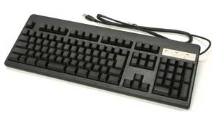
テンキーが付いており、事務など様々な用途に向いています。昔はデスクトップに付属していましたが、今はすっかりノートパソコンが多くなり、ぱったり見なくなりましたね。
コンパクトキーボード
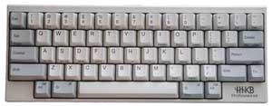
ホームポジションを崩さない配列で、プログラマーなどに人気です。また、持ち運びにも便利で、耐久性も高いものが多いのが特徴です。
マウス一体型
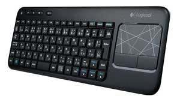
マウスが一体になっており、ノートパソコンと同じ使い勝手ができるのが特徴です。付属のマウスは様々ですが、トラックパッドが付いていることが多いです。
分割型
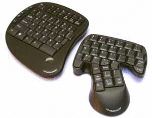
キーボードが半分に分割されており、左右の手が自由に配置できます。キーボードから手を離すことが多い人にはオススメです。
今回はこのなかから、フルキーボードとコンパクトキーボードのみをピックアップし、各ジャンル別にランキングを選定していきます。
キーの種類
ちなみにキーボードの種類の他に、採用している「キー」の方式が違います。
大まかに以下の４つがあります。参考までに。
メカニカルスイッチ
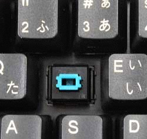
入力の確実性とキー音の心地よさが特徴です。メンブレンスイッチ
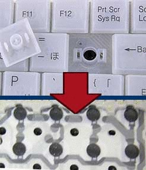
2枚のシートの間に穴のあいた絶縁シートを挟み、キーを押すと接点が触れ合う仕組み。安価ですが長時間のタイピングには向かないようです。静電容量無接点方式
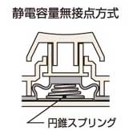
静電容量の変化をスイッチとする仕組み。耐久性が高く、反応が良いと非常に優れていますが、非常に高価です。レーザー投影式
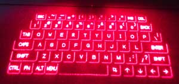
机などにレーザーを投影する方式。レーザーはセンサーを兼ねています。判断基準
ただ単にランキングをつけると偏見が多いので、以下の判断基準を設けています。
- 人気
- 性能
- 価格
- デザイン
- 耐久性
No.1: フルキーボード ランキング
【３位】マイクロソフト『Sculpt Ergonomic Keyboard for Business』
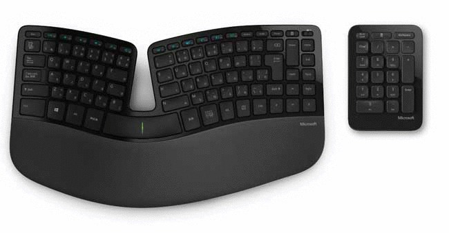
このキーボードは、ちょっとフルキーボードというには特殊ですが、完全に左右が分離できるわけではないことと、大きさを考慮してフルキーボードとみなしました。
特徴としては、マイクロソフトの十八番であるエルゴノミクスキーボードに加え、進化系としての半分割タイプであること、さらにパームレスト一体型というのもグッドです。
というのも、パームレストは別に購入することが多く、高さが合わなくて困ることが多いからです。
その点、マイクロソフトがパームレスト一体型として販売しているのは非常に良いと思います。

売り上げランキング: 1,524
【２位】東プレ『Realforce（通常版）』
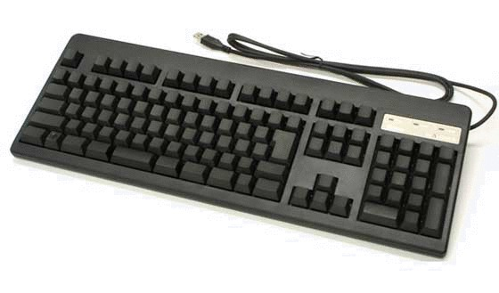
ダントツの人気を誇るRealforceをフルキーボードですが、通常モデルの方を第２位に選びました。
銀行窓口でのシェア70%を誇り、静電容量無接点方式とキー位置による変荷重により高い操作性があり、一般的なキーボードの３倍の耐久性を持ちます。
値段は２万円前後とかなり高いですが、一回購入すれば半永久的に使える上、１万円以下のキーボードとは次元が違います。
ちなみにRealforceには、テンキーを除いたセミコンパクトタイプもあります。

売り上げランキング: 1,374
【１位】東プレ『Realforce 10周年記念 静音フルキーボード』
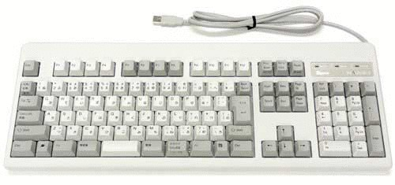
１位に選んだのは、Realforceの10周年記念 静音モデルです。
通常のキーボードを会社など静かな環境で使うと、かなりうるさく感じます。このモデルは静かな環境でも使えるような静音加工がなされているモデルです。
Amazonの評価によると、かなりストレスが軽減されるようです。
その他の機能は２位の通常モデルとほとんど同じなので説明を省きますが、是非この静音タイプは一度は触れてみてほしいです。

売り上げランキング: 10,943
No.2: コンパクトキーボード ランキング
【３位】Apple『Wireless Keyboard』
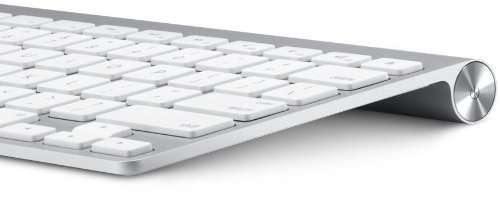
３位に選んだのは、AppleのBluetoothキーボードです。
このキーボードは非常に軽く、ワイヤレスでどこでも操作できます。スイッチはおそらくメンブレン方式ですが、Apple特有の打鍵の気持ちよさがあります。
ただBluetooth全般の難点として、電池の持ちが悪いというところはがあり、将来的に改善してほしいですね。

売り上げランキング: 1,119
【２位】FILCO 『Majestouch MINILA』
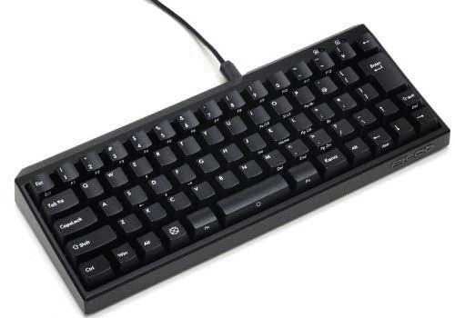
このモデルは人気のあるFILCO Majestouchシリーズで最もコンパクトなレイアウトのMINILAシリーズです。
特徴は、メカニカルスイッチでありながら非常にコンパクトというところです。ダブルFnキー搭載で、HHKBと同様、裏面に機能切り替えスイッチが６系統付いています。
今までいろんなキーボードを試してきたのですが、RealforceとHHKBに次いで使いやすいと思ったキーボードです。
好みがあると思いますが、個人的にはUS＋赤軸がオススメです。

売り上げランキング: 4,240
【１位】PFU『Happy Hacking Keyboard Professional 2』
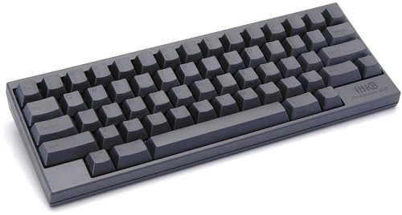
コンパクトタイプの１位には、プログラマーに圧倒的な人気を誇る、通称『HHKB』を選びました。
このモデルの特徴は、Realforceと同じ静電容量無接点方式を採用しており、プログラミングに最適なホームポジションを維持できる配列を採用、また、裏面にはキー割り当てを物理的に変更できるスイッチを搭載しています。
サイズはA4の半分ほどの大きさで、バックに入れて持ち運ぶこともできます。
価格帯は２万円前後とかなり高額ですが、一つ持っておく価値は十分あると思います。

売り上げランキング: 2,282
まとめ
いかがでしたか？個人的には左右分割型のキーボードもランキング化してみたかったのですが、まだ一度も使ったことがないので、是非リベンジしようと思います。
今回のランキングのイメージとしては、昔からの名器が高評価が続いている一方で、新しいモデルも徐々に入ってきていますね。
新しいモデルに期待したいのは、現状ではどのキーボードも一長一短なので、最高のキーボードにどんどん近づいていってほしいですね。
かつ、できればもっと安くなってほしいです。（笑）
売り上げランキング: 10,943

| 最も優れたキーボードランキング |
 | 最も素晴らしいマウスランキング |
 | 世界の凄すぎるダンボールアート10選 |
 | 世界のインターネット事情 - Android vs iPhone |
 | サイバー犯罪の標的となっている『Bitcoin』 |